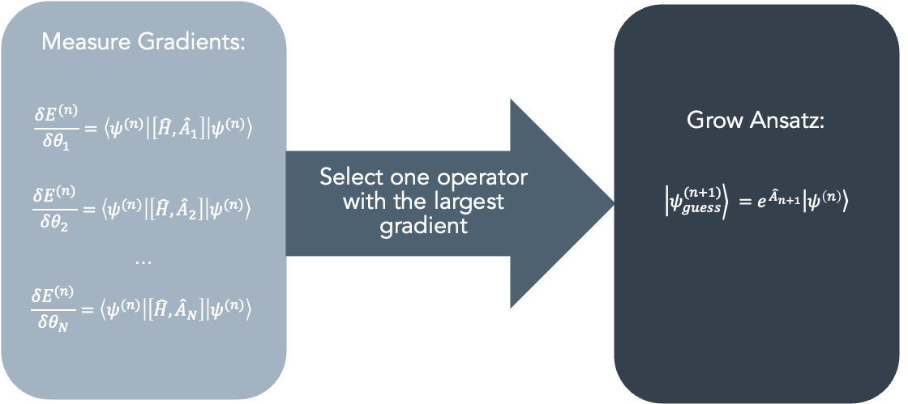

Fe4N2 - 2 - circuit construction with ADAPT-VQE¶
This tutorial aims to introduce the fundamental methodology for conducting quantum chemistry calculations using the Adaptive Variational Quantum Eigensolver (ADAPT-VQE) algorithm. While we provide essential insights into the theory behind this adaptive algorithm, you can access more comprehensive information in the original paper. In this example, our focus will be on calculating the electronic ground state energy of the Fe\(_4\)N\(_2\) molecule in a specific geometric configuration. This tutorial builds upon the foundation laid in the first part of a three-part series tutorial, where we covered the classical workflow for defining the chemical system. It is important to note that you should run the first part before proceeding with this tutorial. The third part can be executed for thoroughness, but it is not mandatory. For a more thorough understanding of how to perform quantum chemistry calculations on quantum computers using InQuanto, we recommend first reviewing the VQE tutorial.
ADAPT-VQE improves upon the standard VQE algorithm by adaptively selecting gates for optimization, leading to faster convergence, enhanced efficiency, increased accuracy, scalability to larger systems, and improved robustness against noise and errors. These advantages make ADAPT-VQE a valuable tool for quantum chemistry simulations and other quantum computing applications.
Here’s a step-by-step explanation of how the ADAPT-VQE algorithm works:
Quantum Circuit Ansatz: ADAPT-VQE starts with the construction of a quantum circuit ansatz. This ansatz represents a parameterized quantum circuit that prepares an approximate wavefunction for the quantum system. The circuit typically consists of a sequence of quantum gates, and the parameters of these gates are adjusted during the optimization process to minimize the energy of the system.
Variational Optimization: The algorithm employs a classical optimizer, such as the gradient descent or the Conjugate Gradient method, to adjust the parameters of the quantum circuit ansatz. The goal is to find the set of parameters that minimizes the expectation value of the system’s Hamiltonian with respect to the prepared quantum state.
Energy Calculation: At each optimization step, the quantum circuit is executed on a quantum computer to measure the expectation value of the Hamiltonian. This measurement provides an estimate of the system’s energy based on the current quantum state prepared by the circuit.
Adaptive Step: ADAPT-VQE is “adaptive” because it dynamically selects which gates in the quantum circuit to optimize at each step. It identifies which gates have the most significant impact on the energy and focuses optimization efforts on those gates, effectively “adapting” the circuit to improve accuracy efficiently. In this context, the ansatz grows as follows: The operator with the most significant gradient is identified, and it is added to the beginning of the ansatz, accompanied by the introduction of a new variational parameter.
Convergence: The optimization process continues iteratively, adjusting the parameters and adaptively modifying the circuit until a convergence criterion is met. This criterion is typically based on a predefined energy threshold or a maximum number of optimization steps.
Ground-State Energy: Once the optimization converges, ADAPT-VQE provides an estimate of the ground-state energy of the molecular system.
The figure below illustrates a summary of the ansatz growing procedure.
{kind=link}
Additional details regarding the chemical systems, methodologies, and outcomes presented in this tutorial series are available in the associated research paper.
To initiate our investigation, we start by importing the qubit Hamiltonian, the state, and the space from the first part.
import pickle
with open('InQ_tut_fe4n2_state.pickle', 'rb') as handle:
state = pickle.load(handle)
with open('InQ_tut_fe4n2_qubit_hamiltonian.pickle', 'rb') as handle:
qubit_hamiltonian = pickle.load(handle)
with open('InQ_tut_fe4n2_space.pickle', 'rb') as handle:
space = pickle.load(handle)
We are going to use our InQuanto ADAPT (AlgorithmFermionicAdaptVQE) algorithm for our calculations. The Fermionic ADAPT method being utilized is essentially an adaptation of the standard ADAPT algorithm. It has been customized to effectively approximate the ground-state energy of fermionic systems.
Parameters used:
pool– Holds the pool of Pauli terms which go the TrotterAnsatz object.state– Initial (para-)fermionic reference state for the chemical system in question (usually the HF determinant).hamiltonian– The Hermitian operator to measure for the lowest eigenvalue.minimizer– Variational Minimizer to use for the ADAPT experiment.tolerance– Expectation value of commutation between pool and Hamiltonian at which loop is stopped.disp– If the algorithm should display variational data every iteration.
Tolerance values do not have universally defined standards and often rely on practical experience. As indicated in the original ADAPT paper, even when employing a stricter threshold, such as 0.001, the ADAPTVQE algorithm does not terminate prematurely. It consistently produces highly accurate results, even when dealing with strongly correlated systems.
Since we are performing an ADAPT-VQE experiment, we must construct a pool of exponents from which we will select only those with the largest gradients during the optimization step(s). Here, we have constructed a pool of excitation operators which correspond to a UCCSD ansatz. The InQuanto webpage provides additional details on the process of generating single and double excitations based on a reference fermion state.
An alternative approach involves employing a unitary coupled-cluster (UCC) ansatz referred to as k-UpCCGSD. This ansatz relies on a family of sparse generalized doubles operators, offering an efficient and progressively refinable unitary coupled-cluster wavefunction suitable for implementation on near-term quantum computers. k-UpCCGSD incorporates k products of the exponential of pair-coupled-cluster double excitation operators, in conjunction with generalized single excitation operators. In some cases, utilizing k-UpCCGSD with k=1 (1 layer) results in shallower circuits compared to UCCSD. You can easily experiment with this approach in the tutorial by commenting out the UCCSD ansatz and uncommenting the k-UpCCGSD ansatz. Further details can be found on the InQuanto webpage.
#UCCSD
exponent_pool = space.construct_single_ucc_operators(state)
exponent_pool += space.construct_double_ucc_operators(state)
Alternatively we could construct a larger exponent pool using the generalized forms:
exponent_pool = space.construct_generalised_single_ucc_operators()
exponent_pool = space.construct_generalised_pair_double_ucc_operators()
Since we are conducting a variational experiment, it is essential to opt for a minimization technique. In this context, we have decided to utilize the L-BFGS-B minimization algorithm provided by SciPy. MinimizerScipy is an InQuanto wrapper for Scipy minimization routines.
from inquanto.minimizers import MinimizerScipy
scipy_minimizer = MinimizerScipy(method="L-BFGS-B", disp=False)
from inquanto.algorithms import AlgorithmFermionicAdaptVQE
adapt = AlgorithmFermionicAdaptVQE(pool=exponent_pool, state=state, hamiltonian=qubit_hamiltonian,
minimizer=scipy_minimizer, tolerance=1e-3 , disp=True)
The ADAPT-VQE algorithm will be run on the Qulacs statevector simulator to build the ansatz and determine its parameters.
Moving forward, we must create the algorithm object, which involves specifying a protocol object. This protocol dictates how the objective function is assessed. In this case, we select a state-vector protocol (SparseStatevectorProtocol) since we have selected a state-vector backend.
The build method constructs the ADAPT algorithm by following these protocols:
protocol_expectation– The protocol used for expectation value calculation.protocol_pool_metric– The protocol used to determine the excitation selection metric.protocol_gradient– The protocol used for gradient calculation.
Subsequently, we utilize the run method to carry out the ADAPT experiment. Upon completion, you will have access to a TrotterAnsatz instance, the optimized energy, and the final parameter values.
IPython’s %%capture cell magic captures stdout/stderr and can be configured to either discard or store them. It defaults to discarding, offering a simple way to suppress unwanted output. Comment the command to display all outputs.
%%capture
from pytket.extensions.qulacs import QulacsBackend
from inquanto.protocols import SparseStatevectorProtocol
from inquanto.operators import FermionOperatorList
backend = QulacsBackend()
adapt_protocol = SparseStatevectorProtocol(backend)
adapt.build(
protocol_expectation=adapt_protocol,
protocol_pool_metric=adapt_protocol,
protocol_gradient=adapt_protocol
)
adapt.run()
In InQuanto, each algorithm object is equipped with a useful method called generate_report. This method serves the purpose of retrieving specific quantities of interest. However, if you’re interested in accessing specific results, you can simply use the relevant key, such as ‘final_value’ to obtain the ground state energy.
results = adapt.generate_report()
print("Minimum Energy: {}".format(results["final_value"]))
Minimum Energy: -598.5059938316058
The final_parameters property provides the optimized ansatz parameters, while the get_exponents_with_symbols method returns a sublist of the fermionic pool operator list containing symbols.
gs_parameters = adapt.final_parameters
exponents_with_symbols = adapt.get_exponents_with_symbols()
print(gs_parameters)
{d0: -0.05998382794327048, d1: 0.006643633455176424, d2: 0.006712497483518555, d3: -0.3477139839141938, s0: -0.0021967280379399066, s1: -0.0023418879957145125, s3: -0.00570403754027392}
We can pickle both the ground state parameters and the list of fermionic pool operators. This allows for easy import and utilization in the third part of this tutorial.
with open('InQ_tut_fe4n2_gs_parameters.pickle', 'wb') as handle:
pickle.dump(gs_parameters, handle, protocol=pickle.HIGHEST_PROTOCOL)
with open('InQ_tut_fe4n2_exponents_with_symbols.pickle', 'wb') as handle:
pickle.dump(exponents_with_symbols, handle, protocol=pickle.HIGHEST_PROTOCOL)
The Fermionic ADAPT algorithm features a get_ansatz function that generates an ansatz circuit built from symbol-containing operators of the fermionic pool. By default, it utilizes an efficient ansatz circuit compilation approach employing the FermionSpaceStateExpChemicallyAware class. This approach helps minimize the computational resources needed.
from inquanto.ansatzes import FermionSpaceStateExpChemicallyAware
ansatz= adapt.get_ansatz(state=state, fermion_ansatz_type=FermionSpaceStateExpChemicallyAware)
print(ansatz.state_circuit)
<tket::Circuit, qubits=6, gates=311>
The state_circuit property in InQuanto represents the symbolic state circuit, which comes with a default compilation. If you are working in a Jupyter environment, you can visualize this symbolic state circuit by utilizing the render_circuit_jupyter function from the pytket library.
from pytket.circuit.display import render_circuit_jupyter
render_circuit_jupyter(ansatz.state_circuit)
To conclude the analysis, you can display additional information about the circuit by showing the total number of qubits, parameters, and CNOT gates it contains. In this circuit, there are a total of 6 qubits, 7 parameters, and 59 CNOT gates. Notably, the multi-qubit gates, specifically the CNOT gates, are the primary contributors to noise within this gate decomposition.
from pytket.circuit import OpType
print(f"# of qubits: {ansatz.n_qubits}")
print(f"# of symbols: {ansatz.n_symbols}")
print(f"# of 2-qubit gates: {ansatz.circuit_resources()['gates_2q']}")
# of qubits: 6
# of symbols: 7
# of CX gates: 59